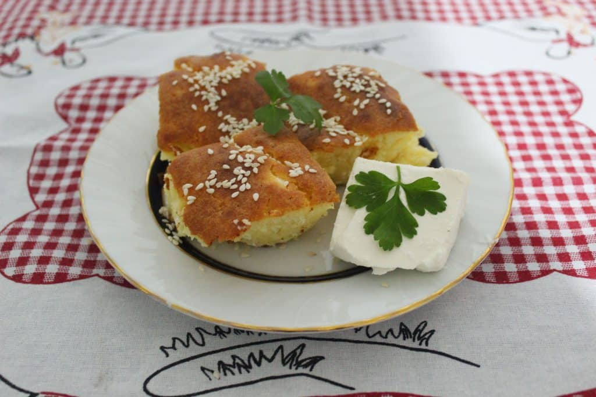

Proja

Description
Proja is a Balkan dish made of corn flour, baking powder, sunflower oil, sparkling water and salt. As one of Serbian national dishes, alternative name for Proja is also Projara. Proha, Prova or Razljevak are alternative names used in Bosnia and Herzegovina.
Ingredients
- 5 cups cornmeal
- 1 teaspoon salt
- 8 ounces (1 cup) unsalted butter, softened
- 3 large eggs, beaten
- 2 cups milk, divided
Steps
- Gather the ingredients.
- Heat oven to 375 F. Lightly coat a 13 x 9-inch pan with cooking spray.
- n a large bowl, mix cornmeal with salt, butter, eggs, and 1 cup milk until thoroughly mixed, for at least 5 minutes.
- Add remaining 1 cup milk and mix again for 5 minutes.
- Transfer to prepared pan and bake until golden and crumbs stick to a toothpick.
- ut into squares, but leave in the pan, and bake an additional 5 to 10 minutes, for a total baking time of 50 to 60 minutes. The cornbread should be crusty on all sides.
- Serve warm.